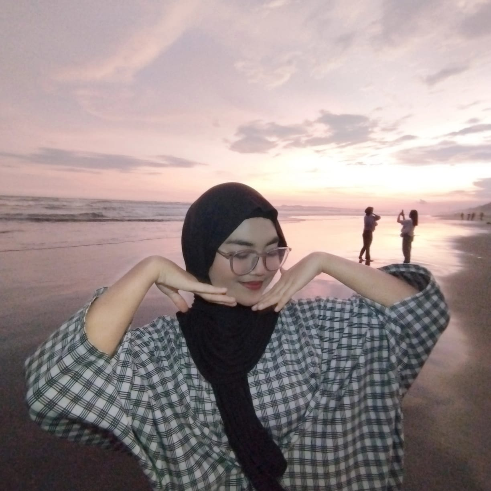

Amelinda Cahyani Indrasari
Pelajar & Desainer Grafis

Tentang Saya
Saya seorang pelajar SMK jurusan PPLG dengan minat di bidang pemrograman dan pengembangan aplikasi. Memiliki semangat belajar tinggi, mampu bekerja sama dalam tim, serta siap mengembangkan keterampilan melalui pengalaman baru.
Pendidikan
SMKN 1 Bawang
2024 - 2027
MTS Ath Thahiriyah
2021 - 2024
SDN 5 Petir
2016 - 2021